By far the hardest day.
North Davis St
 Kelly Elder, my host in Helena
Kelly Elder, my host in Helena
This would be a really long difficult ride. I didn't realize how hard as I left N Davis Street.
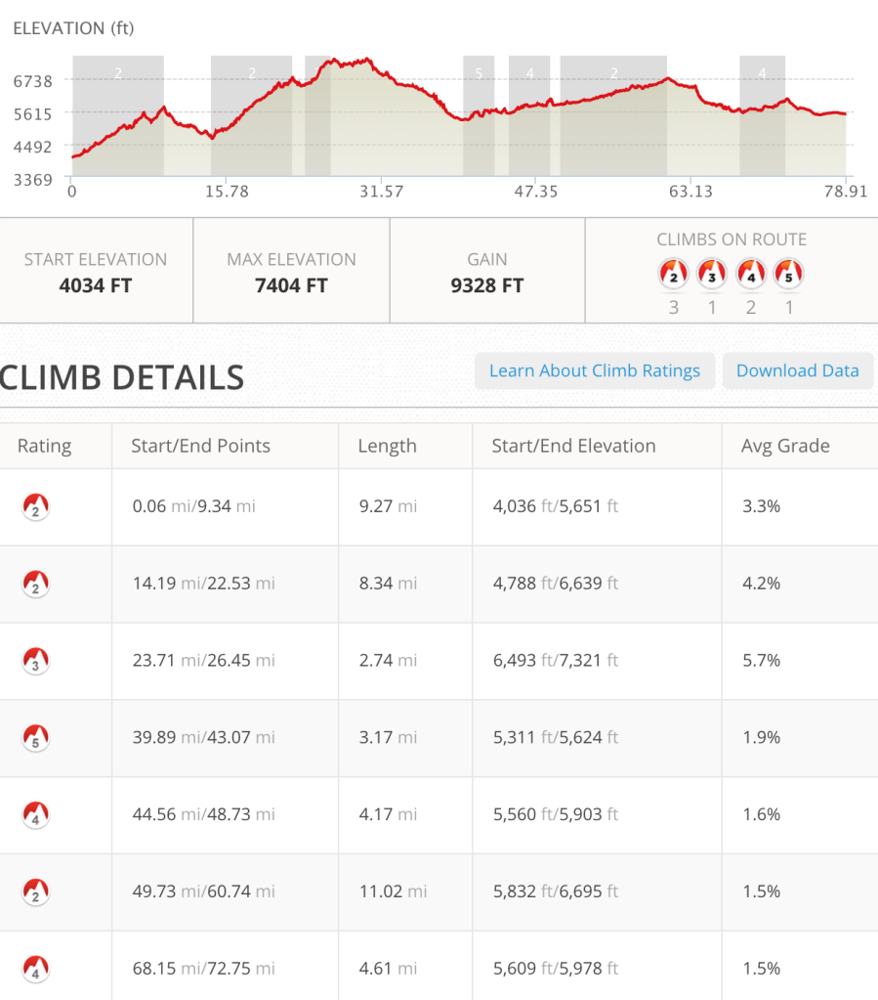
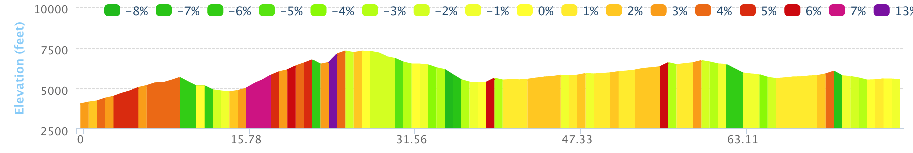
After two hours of hours climbing out of Helena, Kelly caught me after giving me an hour head start. He then mentioned that there was a free bus leaving Helena every Saturday morning which would have taken me up the six mile hill I just climbed. I saw them unloading while I struggled up the hills and wished I had taken the bus. Just kidding ;)
 Toward the top of Corral Gulch Dr
Toward the top of Corral Gulch Dr

A couple major climbs before lunch

Helena to Basin, Montana was a real struggle. After getting over the first climb the second climb was a
monster.

The roots and rocks add to my fun
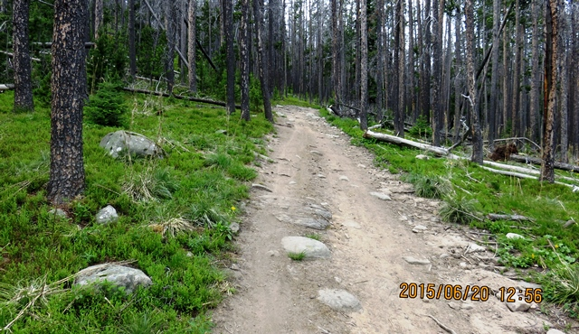
The roots and rocks really started to grind me down.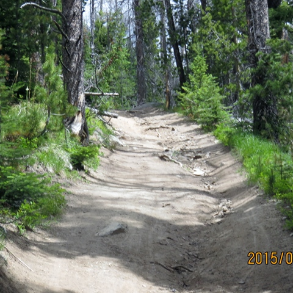
This photo from another site really captures it. Lucky for me I didn't have as much weight as this guy but I still struggled.

This 14 mile section took me more than three and a half hours and when I finally got to the top and started down I made a wrong turn.
Crushing mistake
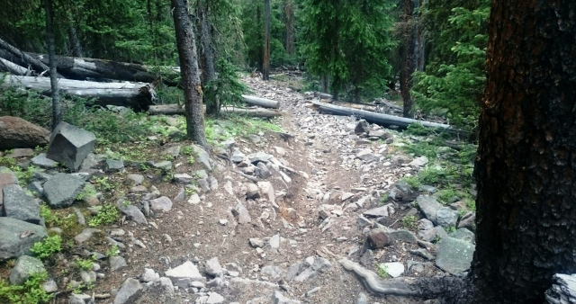
I was so happy to be going down I turned left instead of right. I then spent the next 10 minutes trying not to crash and neglecting my purple line. By the time I looked down and realized it was gone I had dropped 500 feet and gone over a mile

Hard to describe how hard it is to push a bike weighting 50 lbs over ternain like this.
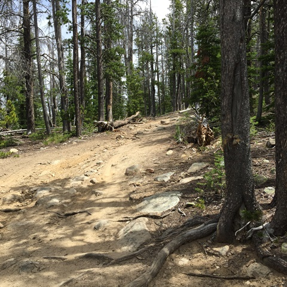
Walking the mile back to the top really tested me mentally. There wasn't anything I could do but go back up but it seemed that I was never going to get back up that hill.
 The shaded area is the ground cover up and down.
The shaded area is the ground cover up and down.
When I reached the intersection where I had made my mistake I still had 350 feet to climb. This five miles was definitely a low point.
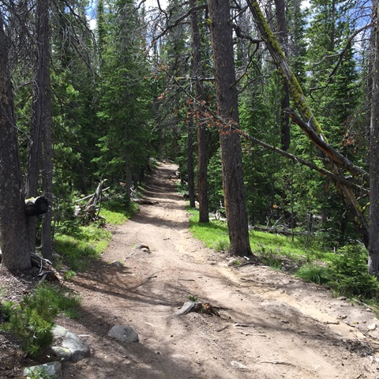
I stopped in the small town of Basin, MT and had a small pizza and lots to drink. A family came in while I was eating and the woman behind the counter required the husband to remove his pistol and holster. When I got back on my way I road along I15 for a while and then went up a 15 mile gradual climb to avoid the interstate frontage road. This was another instance where I could see a river being formed as I traveled up to the source and then down the other side as another river was formed going south.
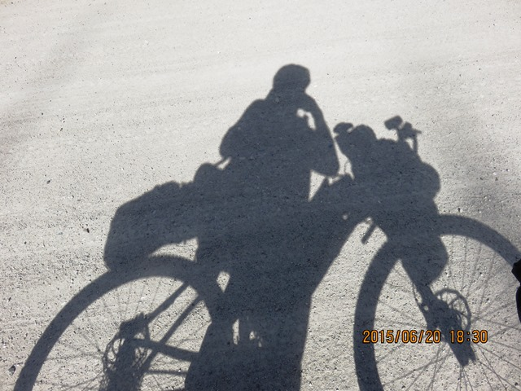
Me and my shadow towards the end of a long day
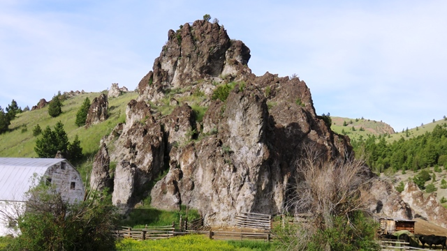
Interesting rock structures looks like Lava. This was the name of the section I had just come through.
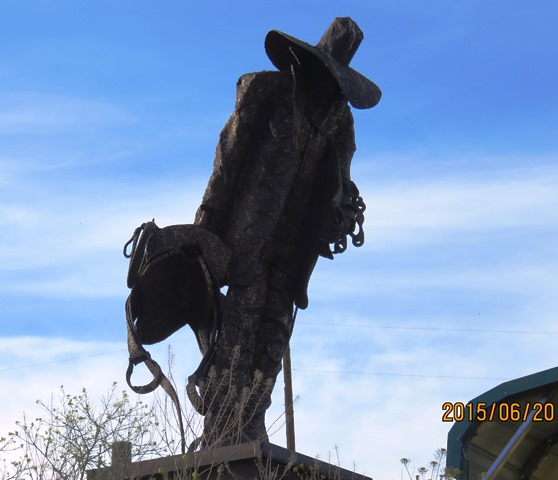
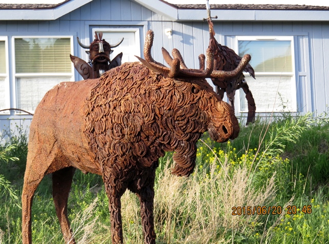
Two of many sculptures in the front yard along Oro Fino Gulch Road which led into Butte.
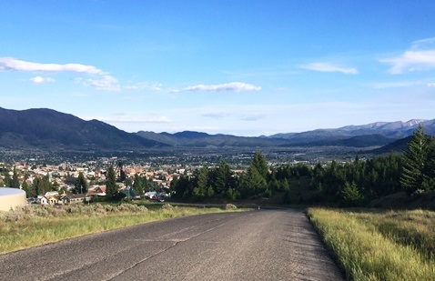
Up above Butte after a long day made longer by a last 500 foot climb during this stretch along Oro Fino Gultch.

What I didn't realize as you come in from the northwest of Butte that there is a giant open pit mine which is bigger than the town itself. It is in the top left corner of the picture above. Easier to see in the screen shot of a google map.
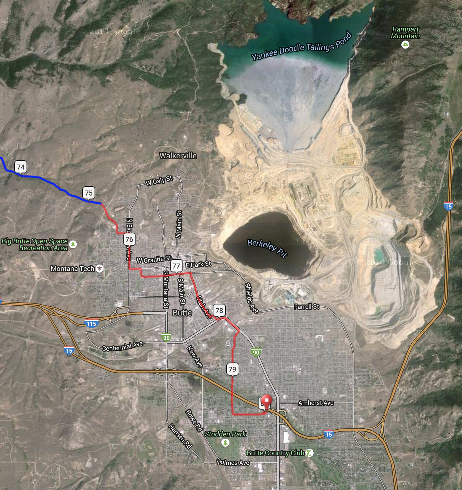
The moon and planets outside the Comfort Inn in Butte.
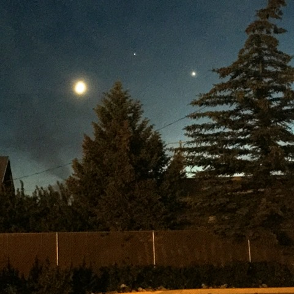
June 20 - 80 miles Helena to Butte, MT
See full screen map To go places and do things that I've never done before – that’s what living is all about.Text by Jim O'Brien . Photographs by Jim O'BrienTD on Flickr.